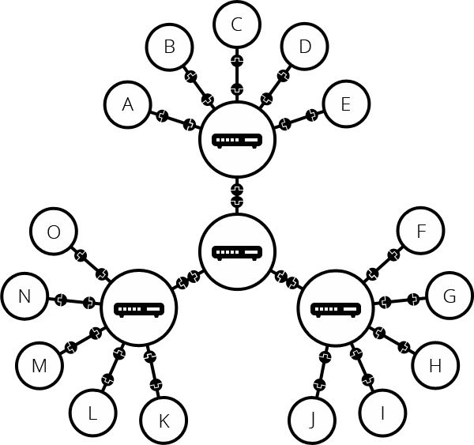

How does the Internet work?
Summary
The Internet is the backbone of the Web, the technical infrastructure that makes the Web possible. At its most basic, the Internet is a large network of computers which communicate all together.
The history of the Internet is somewhat obscure. It began in the 1960s as a US-army-funded research project, then evolved into a public infrastructure in the 1980s with the support of many public universities and private companies. The various technologies that support the Internet have evolved over time, but the way it works hasn't changed that much: Internet is a way to connect computers all together and ensure that, whatever happens, they find a way to stay connected.
Active Learning
How the internet Works in 5 minutes: A 5 minute video to understand the very basics of Internet by Aaron Titus.
Deeper dive
A simple network
When two computers need to communicate, you have to link them, either physically (usually with an Ethernet cable) or wirelessly (for example with WiFi or Bluetooth systems). All modern computers can sustain any of those connections.

Such a network is not limited to two computers. You can connect as many computers as you wish. But it gets complicated quickly. If you're trying to connect, say, ten computers, you need 45 cables, with nine plugs per computer!

To solve this problem, each computer on a network is connected to a special tiny computer called a router. This router has only one job: like a signaler at a railway station, it makes sure that a message sent from a given computer arrives at the right destination computer. To send a message to computer B, computer A must send the message to the router, which in turn forwards the message to computer B and makes sure the message is not delivered to computer C.
Once we add a router to the system, our network of 10 computers only requires 10 cables: a single plug for each computer and a router with 10 plugs.

A network of networks
So far so good. But what about connecting hundreds, thousands, billions of computers? Of course a single router can't scale that far, but, if you read carefully, we said that a router is a computer like any other, so what keeps us from connecting two routers together? Nothing, so let's do that.

By connecting computers to routers, then routers to routers, we are able to scale infinitely.
Such a network comes very close to what we call the Internet, but we're missing something. We built that network for our own purposes. There are other networks out there: your friends, your neighbors, anyone can have their own network of computers. But it's not really possible to set cables up between your house and the rest of the world, so how can you handle this? Well, there are already cables linked to your house, for example, electric power and telephone. The telephone infrastructure already connects your house with anyone in the world so it is the perfect wire we need. To connect our network to the telephone infrastructure, we need a special piece of equipment called a modem. This modem turns the information from our network into information manageable by the telephone infrastructure and vice versa.

So we are connected to the telephone infrastructure. The next step is to send the messages from our network to the network we want to reach. To do that, we will connect our network to an Internet Service Provider (ISP). An ISP is a company that manages some special routers that link all together and can also access other ISPs' routers. So the message from our network is carried through the network of ISP networks to the destination network. The Internet consists of this whole infrastructure of networks.

Finding computers
If you want to send a message to a computer, you have to specify which one. Thus any computer linked to a network has a unique address to identify it, called an "IP address" (where IP stands for Internet Protocol). It's an address made of a series of four numbers separated by dots, for example: 192.168.2.10.
That's perfectly fine for computers, but we human beings have a hard time remembering that sort of address. To make things easier, we can alias an IP address with a human readable name called a domain name. For example, google.com is the domain name used on top of the IP address 173.194.121.32. So using the domain name is the easiest way for us to reach a computer over the Internet.

Internet and the web
As you might notice, when we browse the Web with a Web browser, we usually use the domain name to reach a website. Does that mean the Internet and the Web are the same thing? It's not that simple. As we saw, the Internet is a technical infrastructure which allows billions of computers to be connected all together. Among those computers, some computers (called Web servers) can send messages intelligible to web browsers. The Internet is an infrastructure, whereas the Web is a service built on top of the infrastructure. It is worth noting there are several other services built on top of the Internet, such as email and IRC.